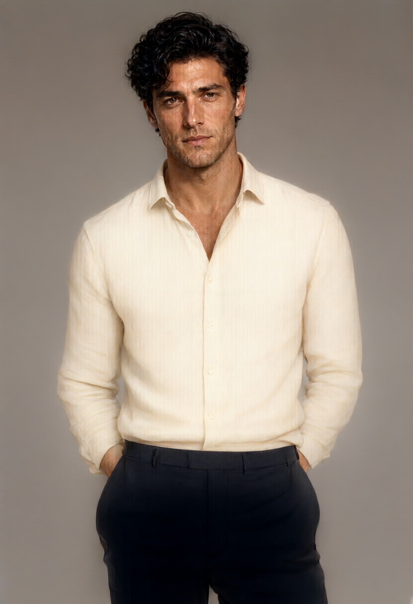

생성은
내 PC에서.
Qwen-Image-2.1을 로컬에서 쓰는
작고 실용적인 이미지 생성 스킬.
한 번 설치하고, 에이전트에게 말하세요.
이미지 생성은 내 그래픽카드에서 실행됩니다.
Windows + NVIDIAQwen Image 2.1 · Q4

프롬프트에서 PNG까지.
외부 이미지 API 없이.
한 번 준비하고,
계속 만드세요.
Python 3.11 이상과 Git이 필요합니다. 모델은 처음에 약 11GB를 받습니다. 설치용 여유 공간은 약 16GB를 준비하세요.
이미 모델이 있다면 --root로 기존 경로를 지정할 수 있습니다.
git clone https://github.com/cskwork/qwen-image-local.git
cd qwen-image-local
$skillRoot = Join-Path $HOME '.codex\skills'
New-Item -ItemType Directory -Path $skillRoot -Force | Out-Null
if (Test-Path (Join-Path $skillRoot 'qwen-image-local')) { throw 'Skill already exists' }
Copy-Item -Recurse skills\qwen-image-local $skillRootCodex 스킬 폴더에 복사합니다. 기존 스킬은 덮어쓰지 않습니다. 설치 후 새 채팅을 시작하세요.
이제 이렇게 요청하세요
“$qwen-image-local 로
자연스러운 인물 사진을 만들어줘.”
실행한 결과를
그대로 공개합니다.
보여드린 이미지는 이 환경에서 생성했습니다.
원본 이미지에는 생성 설정도 함께 기록되어 있습니다.
- 실행 환경
- RTX 4060 8GB · Windows · RAM 32GB
- 측정 시간
- 2분 14초 로딩부터 저장까지 134.2초
- 생성 설정
- 832 × 1216 Euler 20 steps · CFG 6 · seed 42
- 사용한 모델
- Q4_K_M 이미지 4.20GB · 텍스트 5.15GB · VAE 0.68GB
단일 실행 측정값이며 속도를 보장하지 않습니다. 다른 GPU·해상도에서는 달라집니다. 파일 크기와 실제 GPU 메모리 사용량은 다릅니다. 현재는 텍스트로 이미지를 만드는 기능을 검증했습니다.